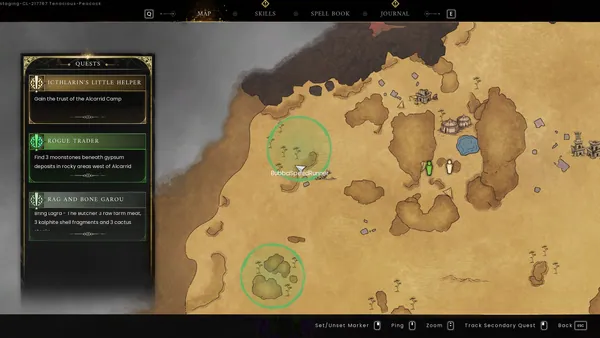
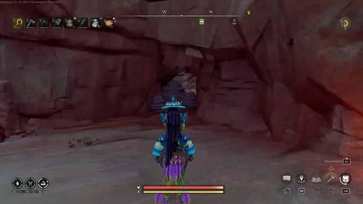
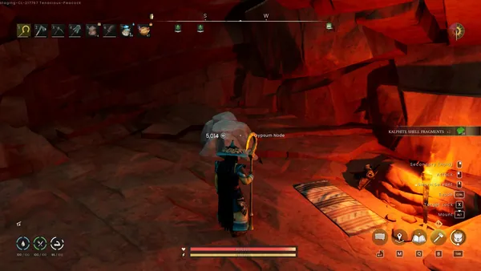
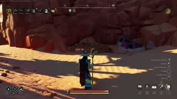
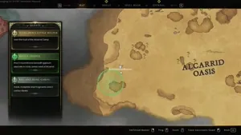

Icthlarin's Little Helper is the eighth primary quest and the fourth in the main storyline of RuneScape: Dragonwilds. In this quest, the player proceeds past the door to the Umbral Sands after spilling the blood of the Black Knight Titan to uncover the mysteries of the desert, build reputation with the local Moon Garou clans, and defeat the tyrant Fuzan before finally entering the Scorned Wilderness.
Overview
- Mithril pickaxe or better for the adamantite ore.
- Adamant logging axe or better for resources.
- Any spade (Adamant recommended)
- 1x clean water
- 3x adamant bars
- 3x of each: Raw farm meat, kalphite shell fragments, and cactus steaks
- Multiple kalphites
- Multiple KotHaar
- Multiple red dragons
- Fuzan
Walkthrough
Part I: Starting off
Note: Interacting with the door to the Umbral Sands will play a small introduction cutscene to the region.
After defeating the Black Knight Titan and talking to Avisk, head back to The Bastion and interact with the door to the Umbral Sands. It is highly recommended that you do this during the night cycle at full rest. Once you have interacted with the door, you will arrive at the Alcarrid Oasis sub-region. Speak to Shangruuh right as you arrive to start the quest.
Arriving to the camp, speak to Ancamairon, who will next to Icthlarin. Icthlarin requests one of the mirror lens they hold in order to use the mirrors and break the seal that blocks Fuzan's tower. The garou does not trust an outsider, let alone a demigod, with their sacred item. So you will be asked to gain the trust of the Moon Garou, starting with the Alcarrid camp.
Once you accept the quest, you'll need to speak to certain NPCs to progress.
Speak to any of them to start the tasks needed to convince the elder of the Alcarrid tribe.
Rogue Trader
Speak to Domri, who will request that you locate three moonstone nodes that are likely hidden in the western area of the desert under some gypsum nodes within rocky areas or caves. The map and compass will direct you to the locations. Check each node to find the moonstone. After you visit all three locations, return to Domri, who will be shocked that the moonstones are real and will reward you with his trust and access to his shop.
Top moonstone map location


Top moonstone player view entrance


Top moonstone under this pile of gypsum


Middle moonstone short video:

▶ Watch the clip on the wikiBottom moonstone short video:

▶ Watch the clip on the wikiNote: By completing reputation quests, you can unlock more items to trade with him, including unique vestiges.
The Mirror Crack'd
Speak to Valas, and they will remark that your task to repair the mirrors smells like folly to them. They commend your spirit, but then tell you how the mirrors are sacred to them because of the River Goddess placing them there to remind them of who must protect Umbral Sands.
Speak to Valas again when you have the bars. Click on option 1 to hand over the bars, and they will say that they will fix the mirrors for you when you collect all of the lenses. They will inform the elder of your part in getting that job done and give you a nice farewell. They will also give you 200 garou chit for your troubles.
Rag and Bone Garou
Speak to Lagra, who wants you to help them with a task and clarifies that they are a butch (or butcher) and want you to bring them three of the following: Raw farm meat, kalphite shell fragments, and cactus steaks.
- Raw farm meat can be gathered from killing nearby vultures or goats.
- The shell fragments can also be found by killing kalphites in the desert.
- Cactus steaks can be gathered from chopping bunny cactuses, which requires an adamant or better logging axe.
Speak to Lagra again when you have the items. Choose option 1 to hand over the meats, and they will praise your work by saying that you have an eye for dead tissue and exoskeletons. They will give you their trust and give you 200 garou chit for your troubles.
Once you have completed the three tasks above, return to Ancamairon. He will mention that the Alcarrid clan now trusts you and that the butcher has even made a dish after you.
Reward: Moon Garou pack and a new Magic Carpet mount.
After completing the tasks for the Alcarrid clan, you now have to navigate to other areas of the desert to collect their lenses. You can go to either the Manafem clan in the southern area of the desert (within the Manafem Plains) or the Uzzer clan in the east (within the Dunes of Uzzer) and speak to their respective elders to discuss building reputation and claiming the lenses.
Part II: Manafem Trouble
Speak to Dúshlánach in the Manafem camp. They will mention that you are a bad omen at a bad time, calling you Unmarked, and reveal they bear the Mark of Fuzan and how that mark is a wound that carves deep. From this Mark, they are slowly losing their will to fight and their sanity, but they do say that their pride is not being lost. They say that while the clan needs help, they are reluctant to accept it. This means that their tasks will be somewhat harder. Just like with the Alcarrid clan, there are three tasks that must be done to acquire their lens.
Note: Beartach will not offer any quests, but completing the reputation quests will increase his reputation by one level.
Song of the Ancients
Speak to Laguna, who is sitting next to a net fishing spot. They would like you to venture into the Vault located south of the camp and write down the lyrics of the songs as they do not like beetles and have heard that beetles reside within the vault.
The vault they spoke of will be circled in green on your map. Be warned that this is a kalphite nesting area, so you will need to rush to the entrance to avoid being outnumbered by kalphites and KotHaar that lurk around the area.
Enter the vault door and head towards the next platform. You will need to summon a scarab staff and take it with you, as this will prevent the scarabs within the dungeon from hurting you. After summoning the staff, the first ancient garou statue will be to the right. Collect this before continuing deeper into the vault.
You will be in combat sometime, and the staff can be swapped for you to protect yourself, which will allow you to pick the staff back up. In the first room, follow the path that leads to a lever, pull it but to not proceed as east of the lever there is a ancient garou statue for you to transcribe. Follow the path and head into the next room, where the statue will be located on top of a platform, requiring Windstep to reach. Now that you have acquired all of the lyrics, you may return to Laguna in the Manafem camp.
Note: The next two levers will open the way to one of the Kalphite Queens. If you are prepared, you can enter the encounter to claim extra reward on beating her, such as the keris' vestige, corroded curved blade.
Speak to Laguna again, and they will be happy that you found them all and want to weave them into a song. After that, they promise to vouch for you with the Manafem Elder.
Scaling Difficulties
Speak to Hedric; he'll task you with looking for his lost scouting party. The scouting party was tracking a creature that had been picking off his people one by one, and he asks you to look for them towards the east and kill the beast.
After talking with Hedric, head towards the green area on your map east of the Manafem camp. Within that area, there will be three clues in the area, two dead garou scouts and a scorched mark. You'll learn that the scouting party is dead, and neither the Scorch, the sandstorms or Fuzan could have made them, but something else. Head further east to where the green circle is on your map, and you will find a red dragon. Kill it and gain the radiant heart.
Head back to Hedric and speak with him, and you will recount how you found their bodies and slain the red dragon nearby. He will thank you for finding their bodies and, now that you have made it safe, will send someone to go collect their bodies. He will remark that the dragon you slain is small-fry compared to Fuzan, hopes you know what you're doing, and recommends you to their Elder. He will give you 200 garou chit for your troubles.
Beast in the Sand
Speak to Manathep, and she will tell you about how the Dearg Due killed her poor Efina. She mentions that Efina was taken three days ago and every night, the Dearg Due watches her from the south of their camp with a glint in her eye and blood on her lips. She asks you to kill the Dearg Due south of the camp and bring back Efina's body.
Head west of the pyramid vault and track down the Dearg Due in the sandstorm. Follow it until you meet Efina. Speak to her, and she will ask for clean water. Give her some clean water and she will say that her strength is coming back to her while thanking you. She then reveals that she ran away from the Manafem camp due to the Mark of Fuzan draining everyone. She then asks you to tell her mum that she is safe and on her way back. The Dearg Due howls back, but you get the sense that a curse has been lifted and the Dearg Due is free to move on from this world.
Return to speak to Manathep. She will praise the River Goddess in joy that her daughter is safe and thinks that the Dearg Due lured her out of the camp as a trick and says the Efina wouldn't go out there alone. She will then give you 200 garou chit for your troubles.
Once you have completed these tasks, speak again to Dúshlánach.
Reward: Level 4 reputation with Beartach - The Merchant's shop, 1 mirror lens, and a Moon Garou pack.
Part III: Heart of Uzzer
Speak to Gaimbín within the Dunes of Uzzer, who will doubt your skills and warn you to leave as they need to prepare for the event of Fuzan's Marking. You will be once again tasked with gaining the clan's trust for the elder to reward you with the mirror lens.
The Dig Site
Speak to Lehran, who asks that you help him learn the truth of his ancestors, and he will vouch for you with the elder. He tells you that there are some ruins to the far south, long lost to the sands, and that the KotHaar have prevented him from travelling there himself. He reveals that the Forbidden Scrolls are meant to tell the truth about what happened to the Moon Garou centuries ago and not the stuff fed to them by their Elders. He asks you to go dig them up and bring back the scrolls to him, offering to also share the revelations with you if there are any.
Head to the area marked on your map, with your spade in your inventory/hotbar. To find the scrolls, you will need to locate areas that are similar to buried chests. Each Forbidden Scroll will be in one specific ruin, with two of them hidden behind locked gates. KotHaar and goats in the area; you will have to fight them to dig peacefully. There are four scrolls you will need to find, and they are the following:
Once you have all four scrolls, return to Lehran. Give him the scrolls, and he will then give you 200 garou chit and the saga for your troubles.
Saga of the Adventurer
Speak to Laguna, and they will tell you that they are on the market for a business partner and one with survival skills. They will tell you that there are four rocky spires around the pyramid close to this camp and that each spire holds a stone slab. They will ask you to go find each Ancient Garou Stone Slabs and note down the inscribed passages. Each passage, woven together, will form a saga. They will give you a scroll and remind you to note down the passages at the rocky spires.
Head towards the area marked on your map. You will find towering rocky spires around the Pyramid, and you must interact with them. Some of these statues are hidden in caves blocked by sandstone nodes, and others are protected by either KotHaar or kalphites. Inspect each statue to gain a piece of the saga. Once you have collected enough pieces of the saga, you will then need to follow a direction pointing towards a specific location. Head to the spire with the Nightmare Crucible of Humiliation entrance, and the last ancient garou statue contains the full saga.
Once you have the complete saga, return to Laguna. They will congratulate you on finishing the saga and would enjoy performing at Fuzan's Mark Day, but for now, they will sing praises of your deeds to the elder. They also remark that you are free to unlock and explore the gateways as you see fit.
Note: You will gain a Crucible Engram of Humiliation for completing this segment.
Mark Day
Speak to Shangruuh, and he will inquire why the Uzzer garou have to be so insufferable. He says that he came here to trade goods, but was told that the clan was busy preparing for Mark Day. He'll ask you to convince each council member to abandon the tradition of Mark Day
There will be three green circles on your map. North of the camp, you'll need to find Brialka the historian councillor. South of the camp, you will find Chirot the Broker Councillor and Alabrais the Science Councillor. Each one will need to be convinced to abandon Mark Day.
Follow the dialogue options for each councillor to secure their vote.
| NPC | Dialogue options |
|---|---|
| Alabrais the Science Councillor |
|
| Brialka the Historian Councillor |
|
| Chirot the Broker Councillor |
|
Once you're done, return to the camp and speak to the elder.
Rewards: 1 Moon Garou pack, mirror lens and level 4 in Iasadair - The Merchant's shop.
Part IV: Fuzan Trials
Visit Fuzan/Strategies for a guide to fighting Fuzan.
Speak to Icthlarin, and he will say that there is little time to waste and that we must repair the mirrors. He informs you that he has positioned them carefully and believes they are directed at Fuzan's Lens, which is a dragonkin relic that protects both his volcano and powers his Mark. That belief, he says, will be tested now and prays to Elidnis for help if he's wrong. Interact with each of the mirrors to repair them fully and they will create a beam of concentrated sunlight directly towards Fuzan's tower. This is where you will be able to enter the Fight Caves and work your way towards Fuzan.
Note: The activity you will enter will only have the "Trials of Fuzan" mode by default. As this activity is not safe, you will lose your items and respawn at your bed.
Head towards The Burning Spire and interact with the volcanic gateway at the base of Fuzan's Volcano. This will let you enter the Fight Caves, and you must interact with the podium in the area to start the fight. Fight and survive through all ten waves of the trial, and you will unlock the path to Fuzan's Lair. Interact with the door to Fuzan's Lair, and you will be able to fight Fuzan. Defeat him and obtain his head.
Once you get his head, return to Icthlarin.
Congratulations! Quest Complete!
Rewards
- 1x Icthlarin's Little Helper reward pack
- The ability to make a new anti-dragon masterwork shield.
- 1x dragonfire shield
- 1x Tome of Volcano
- 1x smouldering draconic visage
- 3x Moon Garou packs
- Full access to the Fight Caves activity
- Including the chance to gain the fire cape
- Full access to the Nightmare Crucible
Required to Complete
This quest is required to complete:
Trivia
- This quest shares the same name of both RuneScape and Old School RuneScape quest, Icthlarin's Little Helper
- The quest has a reference to the Desert Treasure quest from RuneScape and Old School RuneScape, involving mirrors.
- Even their placement resembles that of the other game's quest.
- The quest has a reference to the Desert Treasure quest from RuneScape and Old School RuneScape, involving mirrors.
This guide is the wiki's Icthlarin's Little Helper article, by its editors, reformatted for this site. Licensed CC BY-NC-SA 3.0.